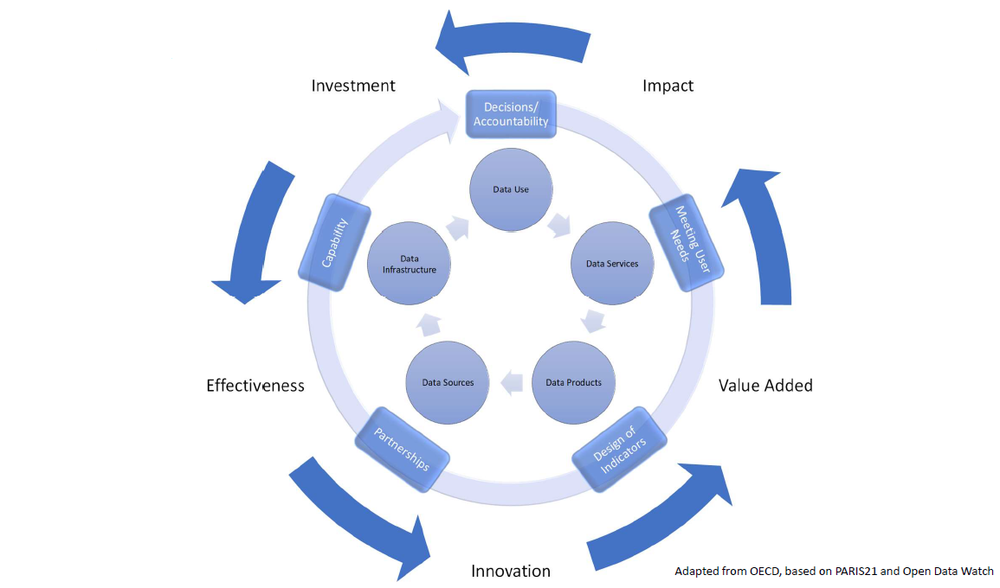
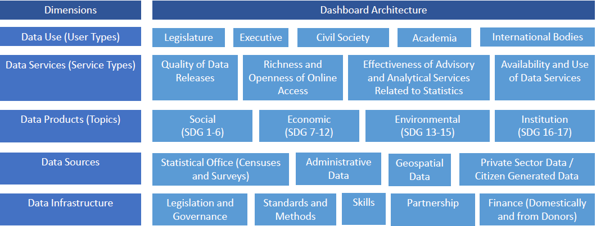

Technical Documentation on Data Sources and Methods for Statistical Performance Indicators
2022-09-09
1 Introduction
This document contains a detailed technical description of the Statistical Performance Indicators (SPI). The document contains a detailed description of each indicator, as well as the R code used to construct each indicator.
1.1 Motivation
The primary purpose of the statistical system is to help users of statistics make better decisions or to hold those decision makers accountable. In the words of Principle 1 of the Fundamental Principles of Official Statistics, the statistics must “meet the test of practical utility”, serving “the Government, the economy and the public with data about the economic, demographic, social and environmental situation.”
The national statistical system, or NSS, plays a crucial role in modern economies. It provides stakeholders, ranging from policy makers to stock market analysts and the general public, with the latest data on the country’s socio-economic developments. At the international level, monitoring progress on global undertakings such as the recently established Sustainable Development Goals (SDGs) requires high-quality data that must be produced consistently across different national statistical systems. Assessing and improving the capacity of a country’s NSS has long been a part of the global agenda. Since the early 2000s, a few capacity assessment tools have been developed to identify the weaknesses and strengths of national statistical systems by other organizations including PARIS21, the Food and Agriculture Organization of the United Nations (FAO), the United Nations Economic Commission for Europe (UNECE), the United Nations Economic Commission for Africa (UNECA), and the U.S. Census Bureau.
The World Bank’s Statistical Capacity Index (SCI) is one such tool that has been widely employed. Several international and national agencies have adopted the SCI for measuring progress in statistical capacity building and related investments. The World Bank mainstreamed the SCI in its monitoring and assessment framework and has adopted it as a baseline indicator in various projects at the country level. The SCI is based on publicly available data, and this has various advantages over other indexes of statistical capacity. A key advantage of the SCI is that it can provide assessment of a country’s statistical capacity in an internationally comparable and cost-effective manner.
Yet, there are several areas in which the existing SCI can be improved. First, it comprises of a limited number of indicators and includes no indicators of some important data sources, such as labor force surveys, establishment surveys, or administrative data. Second, it ignores the data dissemination practices of an NSS, which is one of the key features of data usage. Third, the SCI has been criticized for placing too much weight on statistical output and activities, while neglecting the infrastructure and resource components of statistical systems. Finally, it is silent on whether the data products produced by the NSS are in high demand.
Since its launch in 2004, the SCI’s methodology and coverage have basically remained the same, while the global data landscape has changed significantly. NSSs have made significant advancements with data collection and dissemination practices. At the same time, the adoption of the Sustainable Development Goals (SDGs) set an ambitious development agenda for the next 15 years on ending poverty, protecting the planet, and ensuring prosperity for all by 2030. This, in turn, increased the demand for data and raised the bar for national statistical systems regarding their capacity to produce high-quality data. We thus propose to improve the current SCI to better suit the changing global data landscape.
1.2 Overview of the New SPI
The new Statistical Performance Indicators (SPI) builds on the SCI, which the World Bank has regularly published since 2004. Our new SPI will cover many of the same elements as the SCI, such as statistical methodology, source data, and periodicity, but will also expand into new areas. The goals are to offer a framework that was forward looking, measured less mature statistical systems as well as advanced systems, covered the entire national statistical system, not just the National Statistical Office (NSO), and gives countries incentives to build a modern statistical system. We also are committing to making our project open data and open code to build confidence in our work.
The new Statistical Performance Indicators (SPI) are designed to monitor how well countries statistical systems are meeting this purpose. By helping countries and development partners identify the strengths and weaknesses of national statistical systems the SPI can support policy advice for countries about their national statistical systems, investment decisions for donors including the World Bank, benchmarking of national statistical systems, and advocacy for national statistics.
We identify five key pillars of a country’s statistical performance. These are data use, data services, data products, data sources, and data infrastructure . These pillars can be presented in the form of a dashboard that can help countries identify areas for development in their statistical system. Improvements in performance can be represented as a virtuous data cycle that can become self-sustaining.

Statistics have no value unless they are used. The first pillar of the SPI is therefore data use. A successful statistical system is one that produces data products that are highly used.
In order to meet user needs, the statistical system must develop a range of services that connect data users and producers and facilitate dialogue between them. The second pillar of the SPI is therefore data services that are trusted by users. A successful statistical system is one with highly valued and well used statistical services.
The dialogue between users and suppliers in turn drives the design of statistical products that are to be created including the quality of product needed for the country requirement. This will incorporate accuracy, timeliness, frequency, comparability and levels of disaggregation. The third pillar of the SPI is therefore data products. A successful statistical system is one that generates high quality statistical indicators that can also track progress for the Sustainable Development Goals (SDGs).
In order to create the products required, the statistical system needs to make use of a variety of sources from both inside and outside the government. This will include making use of typical data collection methods like censuses and surveys, but also administrative data, geospatial data, and data generated from the private sector and from citizens. The fourth pillar of the SPI is therefore data sources. A successful statistical system is one which draws on all types of data sources relevant to the indicators that are to be produced.
For the cycle to be complete, capability needs continuously to be reviewed to ensure that it is enough to deliver the products, services and ultimately data use required. The fifth pillar of the SPI is therefore data infrastructure. A successful statistical system is one that develops both hard infrastructure (legislation, governance, standards) and soft infrastructure (skills, partnerships) and has the financial resources to deliver. The 5 pillars and associated 22 dimensions of the SPI are as shown in Figure 1 below.
Figure 1: The Dimensions and Pillars that Construct the New SPI 
A score against each element would facilitate:
Understanding of the maturity of the national statistical system in relation to others eg quintile groups of countries could be shown against each dimension
This in turn would highlight relative strengths and weaknesses of the system and give an indication of the extent to which the official statistics could be relied upon
It would also point to which other countries the country in question could learn from as it seeks to improve and create incentives to develop in a forward looking rather than backward looking way
Time series would allow assessments to be made of progress of the system and a start point for assessments of return on investment for funding given for capacity building
A dynamic view encouraging continuous improvement. As countries improve the bar for what good looks like would get higher
Key characteristics of the SPI are: (i) uses only publicly accessible data; (ii) transparent methodology; (iii) easily replicable; (iv) provides a long-time series to track progress in performance; (v) captures outcomes and supporting elements; (vi) reflects the SDGs; (vii) facilitates at-a-glance comparisons on a global scale. We are collecting data on indicators for the 22 pillars above. For dissemination, the SPI will be presented both in the dashboard format above and as an index for each country. Further details on the construction of the new SPI are provided in the remainder of the document.
1.3 Pillars of the new SPI
A quick primer on names. We refer to the 5 rows in the framework in Figure 1 as pillars. We refer to the 22 cells in the framwork in Figure 1 as dimensions. Finally, each dimension may be composed of multiple indicators. For instance, the dimension on censuses and surveys is made up indicators on whether population censuses have been conducted, agriculture censuses, labor force surveys, etc.
1.3.1 Data use
The data use pillar is segmented by user type. The tiles on the Dashboard provide an indicator of use of statistics respectively by the legislature, executive, civil society (including sub-national actors), academia and international bodies. A mature system would score well across the tiles. Areas for development would be highlighted by weaker scores in that domain enabling questions to be asked about prioritization amongst user groups and why existing services are not resulting in higher use of national statistics in that segment.
1.3.2 Data services
The data services pillar is segmented by service type. The tiles on the Dashboard provide an indicator of the quality of data releases, the richness and openness of online access, the effectiveness of advisory and analytical services related to statistics and the availability and use of data services such as secure microdata access. Advisory and analytical services might incorporate elements related to data stewardship services including ethical consideration of proposals and calling out misuse of data in accordance with the Fundamental Principles of Official Statistics.
1.3.3 Data products
The data products pillar is segmented by topic and organized into social, economic, environmental and institutional domains using the typology of the Sustainable Development Goals. This approach enables comparisons across countries and anchors the system in the 2030 agenda so that a global view can be generated whilst enabling different emphasis to be applied in different countries to reflect the user needs of that country.
1.3.4 Data sources
The data sources pillar is segmented between sources generated by the statistical office (censuses and surveys) and sources accessed from elsewhere (administrative data, geospatial data, private sector data and citizen generated data). The appropriate balance between these types of source will vary depending on the institutional setting and maturity of the statistical system in each country. High scores should reflect the extent to which the sources being utilized enable the necessary statistical indicators to be generated. For example, a low score on environment statistics may reflect a lack of use of (and low score for) geospatial data. This linkage, which is inherent in the data cycle approach, should help highlight areas for investment if country needs are to be met.
1.3.5 Data infrastructure
The data infrastructure pillar is segmented into hard and soft infrastructure segments itemizing essential cross cutting requirements for an effective statistical system. The segments are:
Legislation and governance covering the existence of laws and a functioning institutional framework for the statistical system
Standards and methods addressing compliance with recognized frameworks and concepts
Skills including level of skills within the statistical system and amongst users (statistical literacy)
Partnerships reflecting the need for the statistical system to be inclusive and coherent
Finance, both domestically and from donors
1.3.6 Description of Dimensions
Below is a brief description of the 22 dimensions in our framework.
SPI Dimensions Metadata. | |
Dimension | Brief Description |
Dimension 1.1: Data use by national legislature | Based on PARIS21 data use indicator (Chapter 4 of Statistical Capacity Development Outlook) using national
|
Dimension 1.2: Data use by national executive branch | Based on PARIS21 data use indicator (Chapter 4 of Statistical Capacity Development Outlook) using
|
Dimension 1.3: Data use by civil society | Based on PARIS21 data use indicator (Chapter 4 of Statistical Capacity Development Outlook) using main social media platform in use in country as source. |
Dimension 1.4: Data use by academia | Total number of downloads of the censuses and surveys produced by that country on a per capita basis according to IHSN and World Bank Microdata library. |
Dimension 1.5: Data use by international organizations | Three measures usefulness or reliability of country produced measures for international organizations. First, on comparability of poverty estimates for the World Bank reporting on international poverty (Source: Povcalnet). Second on usable surveys for statistics on child mortality for the UN Inter-agency Group for Child Mortality Estimation (Source: https://childmortality.org/). Third on accuracy of debt reporting as classified by the World Bank (Source: World Bank WDI metadata). |
Dimension 2.1: Data releases | IMF GDDS compliance indicator. 1 Point. Subscribing to IMF SDDS+ or SDDS standards. 0.5 Points. Subscribing to IMF e-GDDS standards. 0 Points. Otherwise. Source: IMF Dissemination Standards Bulletin Board. |
Dimension 2.2: Online access | This indicator measures the richness and openness of online access. Source: Open Data Watch Openness score |
Dimension 2.3: Advisory/ Analytical Services | New indicator of number of non-recurring products on NSO website (ad hoc/experimental rather than regular releases). The indicator is the number of products found. No established source exists for this indicator. |
Dimension 2.4: Data access services | NADA microdata cataloging available for surveys produced by NSO. NADA is an open source microdata cataloging system, compliant with the Data Documentation Initiative (DDI) and Dublin Cores RDF metadata standards. Source: NSO websites. |
Dimension 3.1: Social statistics | Fraction of Indicators in SDG goals 1-6 with value produced by countries statistical system. Source: UN Global SDG Indicators Database. |
Dimension 3.2: Economic statistics | Fraction of Indicators in SDG goals 7-12 with value produced by countries statistical system. Source: UN Global SDG Indicators Database. |
Dimension 3.3: Environmental statistics | Fraction of Indicators in SDG goals 13 & 15 with value produced by countries statistical system. Source: UN Global SDG Indicators Database. |
Dimension 3.4: Institutional statistics | Fraction of Indicators in SDG goals 16 & 17 with value produced by countries statistical system. Source: UN Global SDG Indicators Database. |
Dimension 4.1: Censuses and surveys | Availability of recent censuses and surveys covering broad areas. The following
|
Dimension 4.2: Administrative data | Indicator on quality of vital registration data plus score based on density of administrative data available on key World Bank, UNESCO and ILO databases |
Dimension 4.3: Geospatial data | This indicator measures the maturity of a countries geospatial data system by examining whether indicators accessible at sub-national levels. Source: Open Data Watch availability of key indicators at first administrative level score. |
Dimension 4.4: Private/citizen generated data | New indicator based on references to private/citizen generated data in metadata relating to content on NSO website. No established source for pillar. |
Dimension 5.1: Legislation and governance | New indicator based on PARIS21 indicators on SDG 17.18.2 (national statistical legislation compliance with UN Fundamental Principles of Official Statistics), existence of National Statistical Council, national statistical strategy generation, national statistical plan. Also include some other legislative aspects that foster good use of statistics e.g. freedom of information, privacy/transparency, good governance (e.g. free and fair elections). |
Dimension 5.2: Standards and methods | Internationally accepted and recommended methodology, classifications and standards provide the basis for national statistical offices (NSOs) on data integration, facilitating data exchange and providing the foundation for the preparation of relevant statistical indicators. The following methods and standards are considered: System of national accounts in use, National Accounts base year, Classification of national industry, CPI base year, Classification of household consumption, Classification of status of employment, Central government accounting status, Compilation of government finance statistics, Compilation of monetary and financial statistics, Business process. Source: |
Dimension 5.3: Skills | New indicator drawing on PARIS21 indicators such as statistical society presence and data literacy. |
Dimension 5.4: Partnerships | New indicator based on textual analysis of NSS reports/websites for references to partner organizations. No established source. |
Dimension 5.5: Finance | Indicator based on PARIS21 SDG indicators (SDG 17.18.3 (national statistical plan that is fully funded and under implementation) and SDG 17.19.1 (value of resources made available to strengthen statistical capacity)). Could also incorporate indicator of NSO budget as a percentage of GDP. |
1.4 SPI Data
Thanks to a large scale data collection effort by several organizations including the World Bank, IMF, Open Data Watch, PARIS21, the ILO, WHO, UNESCO, IHSN, and the UN, among others, we were able to compile 54 indicators covering 14 out of our 22 dimensions for our dashboard. These 54 indicators do allow us to provide data for each of our 5 pillars on data use, data services, data products, data sources, and data infrastructure. Yet, there remain major gaps in what we are able to measure, and the gaps may mean we are flying blind in some areas on whether statistical systems are meeting the needs of the public. Going forward, the international community must work together to fill these gaps.
An area of particular concern is in the pillar of data use. Currently, our dashboard only features data for one of the five dimensions in data use. That is on data use by international organizations. We are currently blind as to whether statistical systems are providing useful data to their national governments (legislature and executive branches), to civil society, and to academia. By closing this data gap, country national statistical offices (NSOs) can be better guided in whether the information they are providing is meeting their user’s needs. International organizations can help steer funding for capacity building in areas that are lacking. And the virtuous data cycle can begin: where better investment leads to more effectiveness, then more innovation, higher value-added, and ultimately greater impact.
Another area that needs improvement is in the measurement of advisory and analytical services provided by NSOs, such as data stewardship services and the ethical consideration of proposals. By measuring this type of work done by NSOs that goes beyond producing data, the international community and the NSOs themselves can better assess whether this type of support is in place.
In the area of data sources, more information is needed particularly in the areas of administrative data, geospatial data, and private and citizen generated data. While we have measures of administrative data use, particularly on the development of civil registrations and vital statistics systems, we have an incomplete picture of whether the administrative data systems are in place to measure health, education, labor, and social protection program statistics. For our geospatial indicator, we have a proxy measure of whether the country is able to produce indicators at the sub-national level, but we lack an understanding of how countries are using geospatial information in other ways, for instance using satellite data. And while the world is increasingly awash with private and citizen generated data, such as on mobility, job searching, or social networking, we were unable to find a reliable source to measure how national statistical systems are incorporating this information.
Finally, many of the soft components of data infrastructure lacked adequate data. This includes the areas of skill (including data literacy) and partnerships between entities in the national statistical system. We are making use of the PARIS21 led SDG indicator on whether statistical legislation met the standards of the UN fundamental Principles of Statistics in our dashboard, but were unable to use this in our index, because countries have not sufficiently reported to PARIS21 on this measure. This is also true of the PARIS21 led SDG indicator on whether the national statistical system is fully funded. Countries should be encouraged to report on this information.
Below is a brief description of the information (or lack thereof) we have available for the dimensions in our framework. For dimensions excluded, we either lacked a source with a developed methodology or else the data collection for that measure was incomplete. This is described below:
Dimension 1.1: Data use by national legislature: Not included because of lack of established methodology. In principle it may be possible to utilize websites of national legislatures but this will require further work and assessment.
Dimension 1.2: Data use by national executive branch: Not included because of lack of established methodology. There are some usable data sources with fairly good coverage (as used by PARIS21) but gaps in data have prevented fuller assessment of suitable methods.
Dimension 1.3: Data use by civil society: Not included because of lack of established methodology. There are some usable data sources with good coverage, for example from social media but more data is required to help assess and allow for likely biases between and within countries.
Dimension 1.4: Data use by academia: Not included because of lack of established methodology. We have not been able to find usable data sources with global coverage on which a new methodology could be developed.
Dimension 1.5: Data use by international organizations: Reliability/Usefulness of Poverty, Child Mortality, Debt Statistics, safely managed drinking water, and labor force statistics data for international agencies using metadata. We recognize that these data sources provide only partial coverage but consider that they do at least provide some indication of the performance of the national statistical system. With more complete data sources it would be possible to assess this further
Dimension 2.1: Data Releases: SPI.D2.1.GDDS - SDDS/e-GDDS subscription. This is a good data source but we recognize that it is a proxy for the concept we are seeking to capture rather than a direct measurement.
Dimension 2.2: Online access: SPI.D2.2.Openness.subscore ODIN Open Data Openness score. This is a well-established data source with good country coverage. In using this indicator, it is important to describe carefully what is captured since the purpose of ODIN is different to the purpose of the SPI.
Dimension 2.3: Advisory/ Analytical Services: Not included because of lack of established methodology. We recognize that this data source provides only limited coverage but consider that it does at least provide some indication of the performance of the national statistical system. With more complete data sources it would be possible to assess this further.
Dimension 2.4: Data services: SPI.D2.4.NADA NADA metadata. We have not been able to find usable data sources with global coverage on which a new methodology could be developed.
Dimension 3.1: Social Statistics: Average score for Goal 1-6 indicators. The primary data source is the UN SDG database. Whilst this is a database with comprehensive coverage that all countries have signed up to, it is clear that many (particularly developed countries) are not yet submitting their available national data. Scores for these countries are likely to represent an indicator of their willingness to submit national data rather than their performance in calculating the indicators. For OECD countries, we supplement the UN SDG database with comparable data submitted to the OECD following the methodology in Measuring Distance to the SDG Targets 2020: An Assessment of Where OECD Countries Stand (https://www.oecd.org/sdd/measuring-distance-to-the-sdg-targets-2020-a8caf3fa-en.htm).
Dimension 3.2: Economic Statistics: Average score for Goal 7-12 indicators. See 3.1.
Dimension 3.3: Environmental Statistics: Average score for Goal 13-15 indicators. See 3.1.
Dimension 3.4: Institutional Statistics: Average score for Goal 16-17 indicators. See 3.1.
Dimension 4.1: Censuses and Surveys: Average score Census and Survey Indicators indicators. In this release of the SPI the data and methods used for this indicator are the same as for the previous SPI. Further work could improve the validity of this indicator and reduce the risk that countries may be incentivized to adopt outdated practices for censuses and surveys.
Dimension 4.2: Administrative Data: Average score for CRVS indicator. Social Protection, Education, and Labor admin data indicators not included because of lack of established methodolgy. While our team identified several promising sources for administrative data from the World Bank’s ASPIRE team, UNESCO, and ILO, incomplete coverage across countries made us drop these indicators from our index. A major research and data collection effort is needed from all custodian agencies to fill in this information, so that a more comprehensive picture of administrative data availability can be produced.
Dimension 4.3: Geospatial Data: SPI.D4.3.GEO.first.admin.level - Geospatial data available at 1st Admin Level. We recognize that this data source provides only limited coverage but consider that it does at least provide some indication of the ability of the national statistical system to produce geospatial data. A major research and data collection effort is needed via GGIM to fill in this information, so that a more comprehensive picture of geospatial data capability at the national level can be produced. Until this is done, it we cannot even assess the scale of the data gaps in a comparable way.
Dimension 4.4: Private/citizen generated data: Not included because of lack of established methodology. Currently no comprehensive source exists to measure the use of private and citizen generated data in national statistical systems, and this should be another area where more data collection is needed by the international community.
Dimension 5.1: Legislation and governance: Included in dashboard, but not index because of insufficient country coverage. A global database of statistical and data legislation and governance practice would be a valuable resource for capacity building in general not just for the SPI.
Dimension 5.2: Standards and Methods: Average score for Standards and Methods indicators. In this release of the SPI the data and methods used for this indicator are the same as for the previous SPI. Further work could improve the validity of this indicator and reduce the risk that countries may be incentivized to adopt only traditional standards and methods and neglect innovative solutions that may be more valid in the current context.
Dimension 5.3: Skills: Not included because of lack of established methodology or suitable data sources
Dimension 5.4: Partnerships: Not included because of lack of established methodology or suitable data sources
Dimension 5.5: Finance: Included in dashboard, but not index because of insufficient country coverage and concerns that the indicator has biases that would lead to misleading incentives.
This process of eliminating some dimensions due to lack of established methodology or country coverage results in 12 dimensions This includes 1 on data use, 3 on data services, 4 on data products, 3 on data sources, and 1 on data infrastructure.